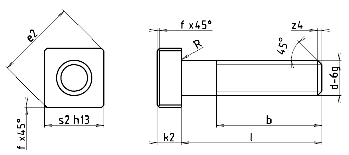

Příklad označení upínacího šroubu se závitem M12, délky l=50 mm, třídy pevnosti 5:
ŠROUB M12×50 ČSN 02 1124.1
| Závit d | b | e2 | f | k2 | R1 | s2 | x | z4min. |
|---|---|---|---|---|---|---|---|---|
| M6 | 18 | 17,7 | 0,5 | 5 | 0,5 | 13 | 2,5 | 1,0 |
| M8 | 22 | 20,5 | 0,5 | 6 | 0,5 | 15 | 3,2 | 1,4 |
| M10 | 26 | 24,0 | 1,0 | 7 | 1,0 | 18 | 3,8 | 1,6 |
| M12 | 30 | 29,7 | 1,0 | 8 | 1,0 | 22 | 4,3 | 1,6 |
| M16 | 38 | 37,5 | 1,5 | 10 | 1,0 | 28 | 5,0 | 2,0 |
| M20 | 46 | 46,0 | 1,5 | 14 | 1,0 | 34 | 6,3 | 2,5 |
| Délka l | 25 | 30 | 35 | 40 | 45 | 50 | 60 | 70 | 80 | 90 | 100 | 110 | 120 | 140 | 160 |
|---|---|---|---|---|---|---|---|---|---|---|---|---|---|---|---|
| Závit d | Přibližná hmotnost šroubu [g] | ||||||||||||||
| M6 | 12,2 | 13,3 | 14,4 | 15,5 | |||||||||||
| M8 | 22,4 | 24,4 | 26,4 | 28,4 | 30,4 | ||||||||||
| M10 | 39,4 | 42,5 | 45,6 | 48,6 | 54,8 | 61,0 | 67,2 | ||||||||
| M12 | 65,9 | 70,4 | 74,8 | 83,7 | 92,6 | 101 | 110 | 119 | |||||||
| M16 | 140 | 156 | 176 | 188 | 204 | 219 | 235 | 251 | 282 | ||||||
| M20 | 275 | 300 | 324 | 349 | 374 | 398 | 423 | 472 | 522 | ||||||